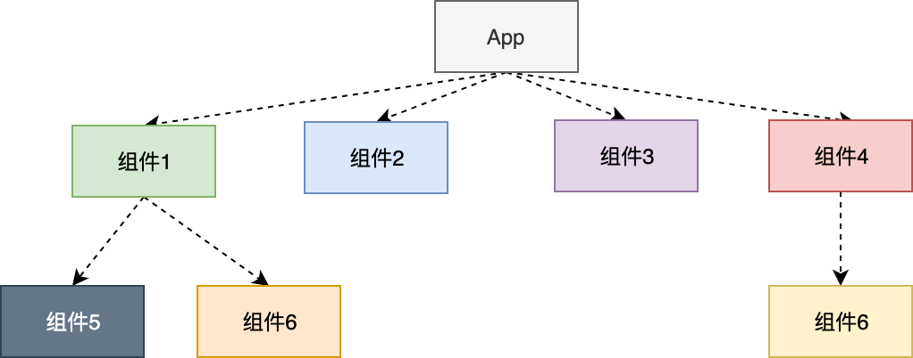
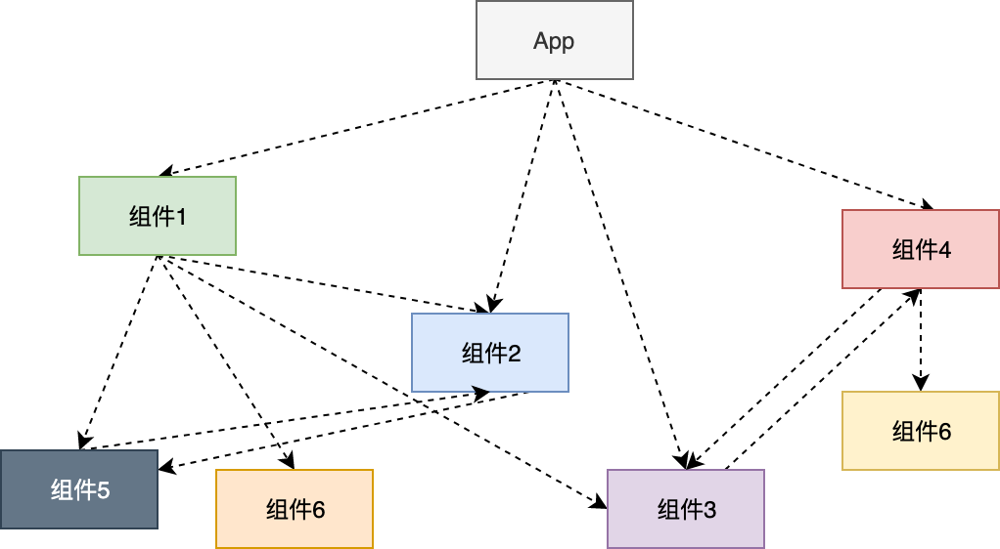
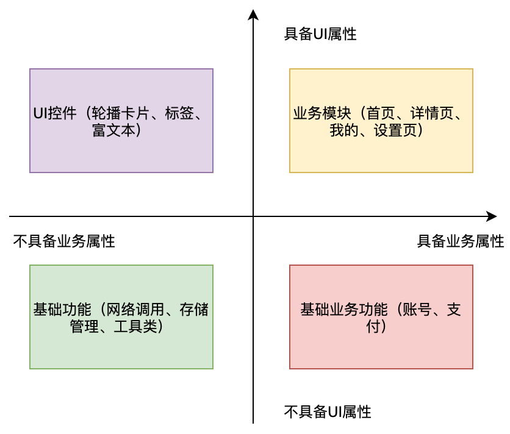
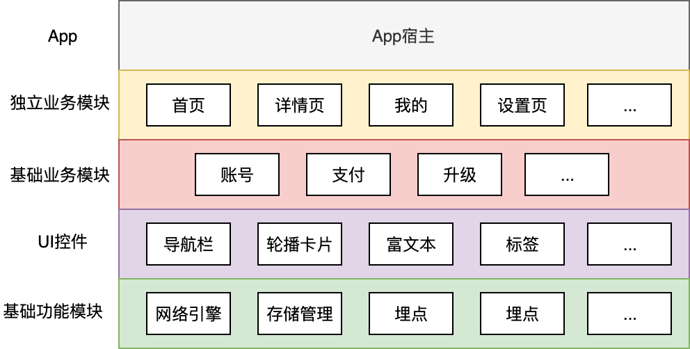
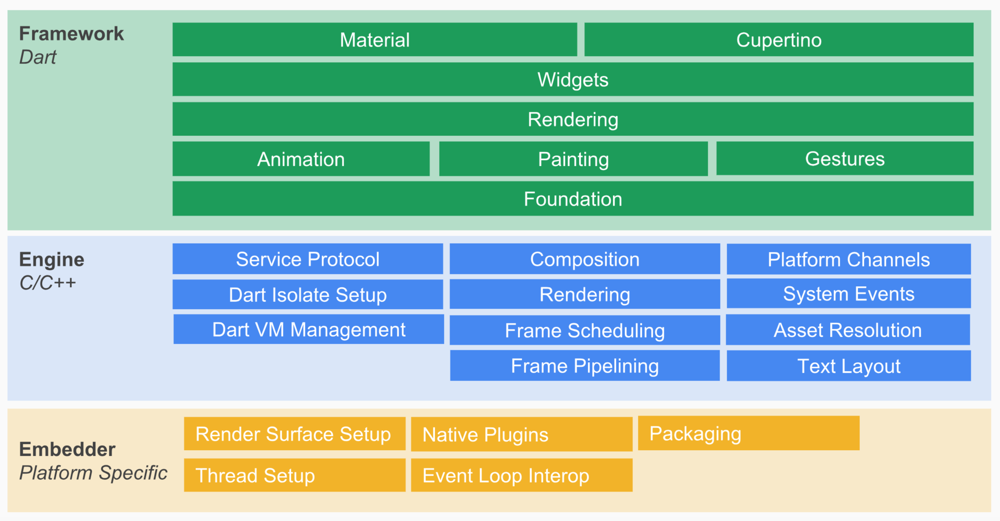

你好，我是陈航。今天，我们来聊一聊 Flutter 应用的工程架构这个话题。
在软件开发中，我们不仅要在代码实现中遵守常见的设计模式，更需要在架构设计中遵从基本的设计原则。而在这其中，DRY（即 Don’t Repeat Yourself）原则可以算是最重要的一个。
通俗来讲，DRY 原则就是“不要重复”。这是一个很朴素的概念，因为即使是最初级的开发者，在写了一段时间代码后，也会不自觉地把一些常用的重复代码抽取出来，放到公用的函数、类或是独立的组件库中，从而实现代码复用。
在软件开发中，我们通常从架构设计中就要考虑如何去管理重复性（即代码复用），即如何将功能进行分治，将大问题分解为多个较为独立的小问题。而在这其中，组件化和平台化就是客户端开发中最流行的分治手段。
所以今天，我们就一起来学习一下这两类分治复用方案的中心思想，这样我们在设计 Flutter 应用的架构时也就能做到有章可循了。
组件化
组件化又叫模块化，即基于可重用的目的，将一个大型软件系统（App）按照关注点分离的方式，拆分成多个独立的组件或模块。每个独立的组件都是一个单独的系统，可以单独维护、升级甚至直接替换，也可以依赖于别的独立组件，只要组件提供的功能不发生变化，就不会影响其他组件和软件系统的整体功能。

可以看到，组件化的中心思想是将独立的功能进行拆分，而在拆分粒度上，组件化的约束则较为松散。一个独立的组件可以是一个软件包（Package）、页面、UI 控件，甚至可能是封装了一些函数的模块。
组件的粒度可大可小，那我们如何才能做好组件的封装重用呢？哪些代码应该被放到一个组件中？这里有一些基本原则，包括单一性原则、抽象化原则、稳定性原则和自完备性原则。
接下来，我们先看看这些原则具体是什么意思。
单一性原则指的是，每个组件仅提供一个功能。分而治之是组件化的中心思想，每个组件都有自己固定的职责和清晰的边界，专注地做一件事儿，这样这个组件才能良性发展。
一个反例是 Common 或 Util 组件，这类组件往往是因为在开发中出现了定义不明确、归属边界不清晰的代码：“哎呀，这段代码放哪儿好像都不合适，那就放 Common（Util）吧”。久而久之，这类组件就变成了无人问津的垃圾堆。所以，再遇到不知道该放哪儿的代码时，就需要重新思考组件的设计和职责了。
抽象化原则指的是，组件提供的功能抽象应该尽量稳定，具有高复用度。而稳定的直观表现就是对外暴露的接口很少发生变化，要做到这一点，需要我们提升对功能的抽象总结能力，在组件封装时做好功能抽象和接口设计，将所有可能发生变化的因子都在组件内部做好适配，不要暴露给它的调用方。
稳定性原则指的是，不要让稳定的组件依赖不稳定的组件。比如组件 1 依赖了组件 5，如果组件 1 很稳定，但是组件 5 经常变化，那么组件 1 也就会变得不稳定了，需要经常适配。如果组件 5 里确实有组件 1 不可或缺的代码，我们可以考虑把这段代码拆出来单独做成一个新的组件 X，或是直接在组件 1 中拷贝一份依赖的代码。
自完备性，即组件需要尽可能地做到自给自足，尽量减少对其他底层组件的依赖，达到代码可复用的目的。比如，组件 1 只是依赖某个大组件 5 中的某个方法，这时更好的处理方法是，剥离掉组件 1 对组件 5 的依赖，直接把这个方法拷贝到组件 1 中。这样一来组件 1 就能够更好地应对后续的外部变更了。
在理解了组件化的基本原则之后，我们再来看看组件化的具体实施步骤，即剥离基础功能、抽象业务模块和最小化服务能力。
首先，我们需要剥离应用中与业务无关的基础功能，比如网络请求、组件中间件、第三方库封装、UI 组件等，将它们封装为独立的基础库；然后，我们在项目里用 pub 进行管理。如果是第三方库，考虑到后续的维护适配成本，我们最好再封装一层，使项目不直接依赖外部代码，方便后续更新或替换。
基础功能已经封装成了定义更清晰的组件，接下来我们就可以按照业务维度，比如首页、详情页、搜索页等，去拆分独立的模块了。拆分的粒度可以先粗后细，只要能将大体划分清晰的业务组件进行拆分，后续就可以通过分布迭代、局部微调，最终实现整个业务项目的组件化。
在业务组件和基础组件都完成拆分封装后，应用的组件化架构就基本成型了，最后就可以按照刚才我们说的 4 个原则，去修正各个组件向下的依赖，以及最小化对外暴露的能力了。
平台化
从组件的定义可以看到，组件是个松散的广义概念，其规模取决于我们封装的功能维度大小，而各个组件之间的关系也仅靠依赖去维持。如果组件之间的依赖关系比较复杂，就会在一定程度上造成功能耦合现象。
如下所示的组件示意图中，组件 2 和组件 3 同时被多个业务组件和基础功能组件直接引用，甚至组件 2 和组件 5、组件 3 和组件 4 之间还存在着循环依赖的情况。一旦这些组件的内部实现和外部接口发生变化，整个 App 就会陷入不稳定的状态，即所谓牵一发而动全身。

平台化是组件化的升级，即在组件化的基础上，对它们提供的功能进行分类，统一分层划分，增加依赖治理的概念。为了对这些功能单元在概念上进行更为统一的分类，我们按照四象限分析法，把应用程序的组件按照业务和 UI 分解为 4 个维度，来分析组件可以分为哪几类。

可以看出，经过业务与 UI 的分解之后，这些组件可以分为 4 类：
- 具备 UI 属性的独立业务模块；
- 不具备 UI 属性的基础业务功能；
- 不具备业务属性的 UI 控件
- 不具备业务属性的基础功能
按照自身定义，这 4 类组件其实隐含着分层依赖的关系。比如，处于业务模块中的首页，依赖位于基础业务模块中的账号功能；再比如，位于 UI 控件模块中的轮播卡片，依赖位于基础功能模块中的存储管理等功能。我们将它们按照依赖的先后顺序从上到下进行划分，就是一个完整的 App 了。

可以看到，平台化与组件化最大的差异在于增加了分层的概念，每一层的功能均基于同层和下层的功能之上，这使得各个组件之间既保持了独立性，同时也具有一定的弹性，在不越界的情况下按照功能划分各司其职。
与组件化更关注组件的独立性相比，平台化更关注的是组件之间关系的合理性，而这也是在设计平台化架构时需要重点考虑的单向依赖原则。
所谓单向依赖原则，指的是组件依赖的顺序应该按照应用架构的层数从上到下依赖，不要出现下层模块依赖上层模块这样循环依赖的现象。这样可以最大限度地避免复杂的耦合，减少组件化时的困难。如果我们每个组件都只是单向依赖其他组件，各个组件之间的关系都是清晰的，代码解耦也就会变得非常轻松了。
平台化强调依赖的顺序性，除了不允许出现下层组件依赖上层组件的情况，跨层组件和同层组件之间的依赖关系也应当严格控制，因为这样的依赖关系往往会带来架构设计上的混乱。
如果下层组件确实需要调用上层组件的代码怎么办？
这时，我们可以采用增加中间层的方式，比如 Event Bus、Provider 或 Router，以中间层转发的形式实现信息同步。比如，位于第 4 层的网络引擎中，会针对特定的错误码跳转到位于第 1 层的统一错误页，这时我们就可以利用 Router 提供的命名路由跳转，在不感知错误页的实现情况下来完成。又比如，位于第 2 层的账号组件中，会在用户登入登出时主动刷新位于第 1 层的首页和我的页面，这时我们就可以利用 Event Bus 来触发账号切换事件，在不需要获取页面实例的情况下通知它们更新界面。关于这部分内容，你可以参考第20和21篇文章中的相关内容，这里就不再赘述了。
平台化架构是目前应用最广的软件架构设计，其核心在于如何将离散的组件依照单向依赖的原则进行分层。而关于具体的分层逻辑，除了我们上面介绍的业务和 UI 四象限法则之外，你也可以使用其他的划分策略，只要整体结构层次清晰明确，不存在难以确定归属的组件就可以了。
比如，Flutter 就采用 Embedder（操作系统适配层）、Engine（渲染引擎及 Dart VM 层）和 Framework（UI SDK 层）整体三层的划分。可以看到，Flutter 框架每一层的组件定义都有着明确的边界，其向上提供的功能和向下依赖的能力也非常明确。

备注：此图引自Flutter System Overview
总结
好了，今天的分享就到这里，我们总结一下主要内容吧。
组件化和平台化都是软件开发中流行的分治手段，能够将 App 内的功能拆分成多个独立的组件或模块。
其中，组件化更关注如何保持组件的独立性，只要拆分的功能独立即可，约束较为松散，在中大型 App 中容易造成一定程度的功能耦合现象。而平台化则更强调组件之间关系的合理性，增加了分层的概念，使得组件之间既有边界，也有一定的弹性。只要满足单向依赖原则，各个组件之间的关系都是清晰的。
分治是一种与技术无关的架构思想，有利于降低工程的复杂性，从而提高 App 的可扩展和可维护性。今天这篇文章，我重点与你分享的是组件化与平台化这两种架构设计的思路，并没有讲解它们的具体实现。而关于组件化与平台化的实现细节，网络上已经有很多文章了，你可以在网上自行搜索了解。如果你还有关于组件化和平台化的其他问题，那就在评论区中给我留言吧。
其实，你也可以琢磨出，今天这篇文章的目的是带你领会 App 架构设计的核心思想。因为，理解思想之后剩下的就是去实践了，当你需要设计 App 架构时再回忆起这些内容，或是翻出这篇文章一定会事半功倍。
思考题
最后，我给你留一道思考题吧。
在 App 架构设计中，你会采用何种方式去管理涉及资源类的依赖呢？
欢迎你在评论区给我留言分享你的观点，我会在下一篇文章中等待你！感谢你的收听，也欢迎你把这篇文章分享给更多的朋友一起阅读。

COMMUNITY NOTES
读者评论
明天是不是最后一讲了？😃